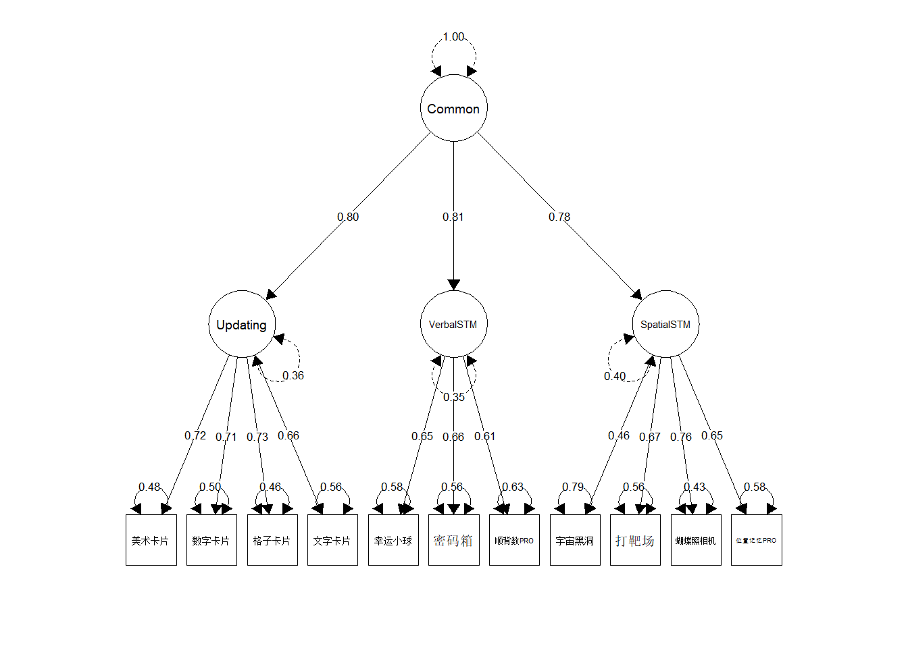
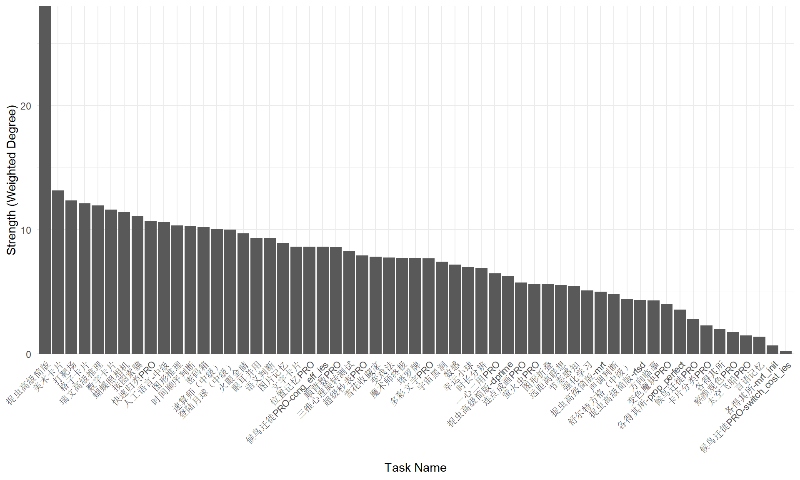
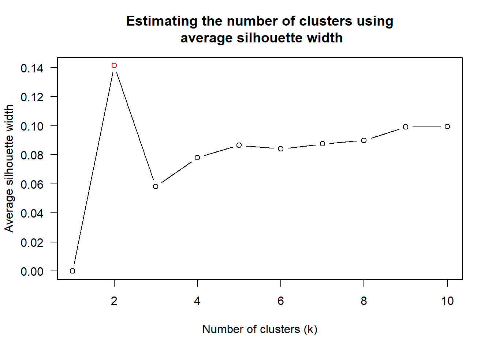
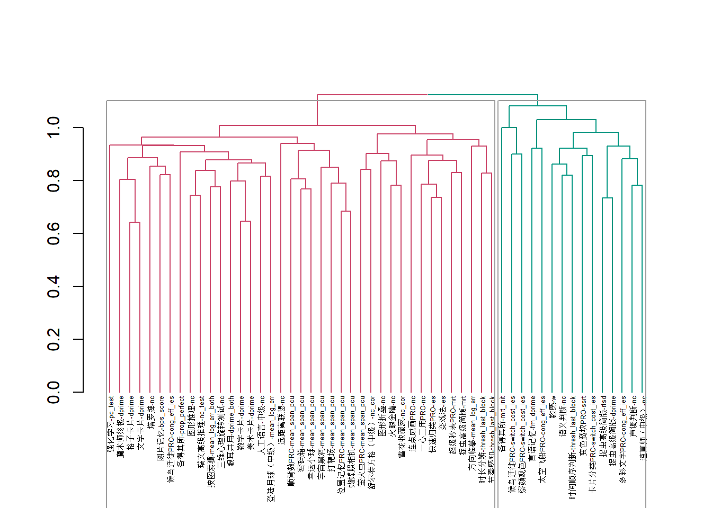
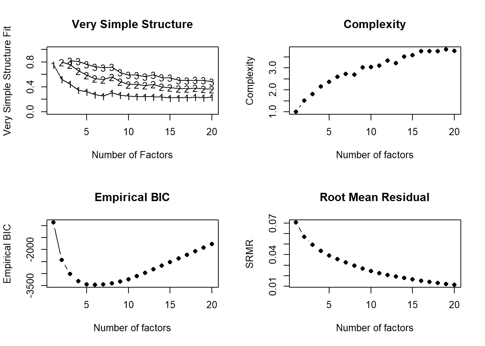
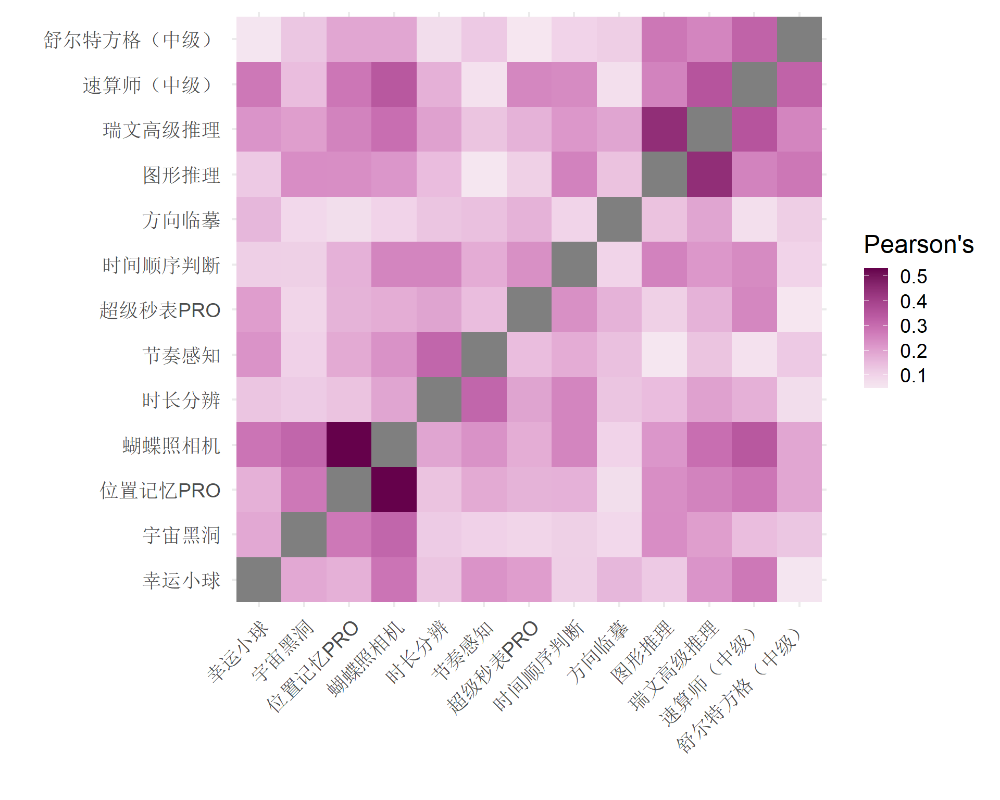
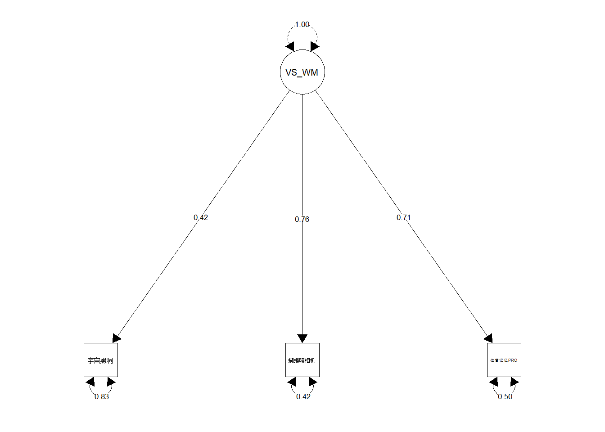

Code
library(tidyverse)
library(corrr)
library(formattable)
requireNamespace("bit64")Liang Zhang
Yifei Cao
June 8, 2022
pivot_wider_indices <- function(data, always_suffix = FALSE) {
data |>
add_count(user_id, game_name) |>
mutate(
game_index = if (always_suffix) {
str_c(game_name, index_name, sep = "-")
} else {
if_else(
n == 1,
game_name,
str_c(game_name, index_name, sep = "-")
)
}
) |>
pivot_wider(
id_cols = user_id,
names_from = game_index,
values_from = test
)
}
format_dt <- function(x) {
x |>
mutate(across(c(r, abs_r, icc), ~ digits(., 2))) |>
formattable(
list(
abs_r = formatter(
"span",
style = ~ style(
color =
case_when(
abs_r > quantile(abs_r, 0.75) ~ "red",
abs_r > quantile(abs_r, 0.25) ~ "blue",
TRUE ~ "green"
)
)
),
icc = color_tile("transparent", "pink")
)
) |>
as.datatable(rownames = FALSE)
}targets::tar_load(
reliability_test_retest,
store = here::here("preproc/_targets")
)
ind_filt <- readxl::read_excel(here::here("config/indices_filtering.xlsx"))
indices_clean <- targets::tar_read(
indices_clean,
store = here::here("preproc/_targets")
) |>
inner_join(
filter(ind_filt, check_result == "target") |>
select(game_name, index_name, reversed) |>
add_row(
game_name = "瑞文高级推理",
index_name = "nc_test",
reversed = FALSE
),
by = c("game_name", "index_name")
) |>
mutate(test = if_else(reversed, -test, test)) |>
group_by(game_name, index_name) |>
filter(!test %in% boxplot.stats(test)$out) |>
ungroup()A basic principle choosing tasks for measuring training transfer effect is based on the correlations between the chosen tasks and the target tasks. Two types of target tasks are now selected:
Here the correlations with these two types of tasks are calculated as follows.
indices_clean |>
filter(game_name_abbr != "RAPM") |>
inner_join(
indices_clean |>
filter(
game_name_abbr == "RAPM",
index_name == "nc_test"
) |>
select(user_id, rapm = test),
by = "user_id"
) |>
group_by(game_name, index_name) |>
summarise(
n = sum(!is.na(test) & !is.na(rapm)),
r = cor(test, rapm, use = "complete"),
.groups = "drop"
) |>
mutate(abs_r = abs(r)) |>
arrange(desc(abs_r)) |>
left_join(
reliability_test_retest |>
select(game_name, index_name, icc = icc_no_outlier),
by = c("game_name", "index_name")
) |>
format_dt()indices_clean |>
filter(game_name_abbr != "NVR") |>
inner_join(
indices_clean |>
filter(game_name_abbr == "NVR") |>
select(user_id, nvr = test),
by = "user_id"
) |>
group_by(game_name, index_name) |>
summarise(
n = sum(!is.na(test) & !is.na(nvr)),
r = cor(test, nvr, use = "complete"),
.groups = "drop"
) |>
filter(n > 100) |>
mutate(abs_r = abs(r)) |>
arrange(desc(abs_r)) |>
left_join(
reliability_test_retest |>
select(game_name, index_name, icc = icc_no_outlier),
by = c("game_name", "index_name")
) |>
format_dt()mean_scores <- indices_clean |>
filter(
game_name_abbr == "NVR" |
(game_name_abbr == "RAPM" & index_name == "nc_test")
) |>
pivot_wider(
id_cols = user_id,
names_from = game_name_abbr,
values_from = test
) |>
mutate(
across(c(NVR, RAPM), ~ scale(.)[, 1]),
score_avg = map2_dbl(NVR, RAPM, ~ (.x + .y) / 2)
)
indices_clean |>
filter(!game_name_abbr %in% c("NVR", "RAPM")) |>
inner_join(mean_scores, by = "user_id") |>
group_by(game_name, index_name) |>
summarise(
n = sum(!is.na(test) & !is.na(score_avg)),
r = cor(test, score_avg, use = "complete"),
.groups = "drop"
) |>
filter(n > 100) |>
mutate(abs_r = abs(r)) |>
arrange(desc(abs_r)) |>
left_join(
reliability_test_retest |>
select(game_name, index_name, icc = icc_no_outlier),
by = c("game_name", "index_name")
) |>
format_dt()fitted <- lavaan::cfa(
'Common =~ Updating + VerbalSTM + SpatialSTM
Updating =~ `美术卡片` + `数字卡片` + `格子卡片` + `文字卡片`
VerbalSTM =~ `幸运小球` + `密码箱` + `顺背数PRO`
SpatialSTM =~ `宇宙黑洞` + `打靶场` + `蝴蝶照相机` + `位置记忆PRO`',
indices_viswm, std.lv = TRUE, std.ov = TRUE,
estimator = "MLR", missing = "ml"
)
semPlot::semPaths(
fitted, what = "std", edge.color = "black", layout = "tree2",
sizeMan = 6, sizeLat = 8, edge.label.cex = 0.6, intercepts = FALSE,
nCharEdges = 5, esize = 1, trans = 1, nCharNodes = 0,
bifactor = "Common"
)
lavaan 0.6-11 ended normally after 34 iterations
Estimator ML
Optimization method NLMINB
Number of model parameters 36
Number of observations 515
Number of missing patterns 58
Model Test User Model:
Standard Robust
Test Statistic 112.220 111.465
Degrees of freedom 41 41
P-value (Chi-square) 0.000 0.000
Scaling correction factor 1.007
Yuan-Bentler correction (Mplus variant)
Model Test Baseline Model:
Test statistic 1351.256 1281.518
Degrees of freedom 55 55
P-value 0.000 0.000
Scaling correction factor 1.054
User Model versus Baseline Model:
Comparative Fit Index (CFI) 0.945 0.943
Tucker-Lewis Index (TLI) 0.926 0.923
Robust Comparative Fit Index (CFI) 0.945
Robust Tucker-Lewis Index (TLI) 0.926
Loglikelihood and Information Criteria:
Loglikelihood user model (H0) -6373.181 -6373.181
Scaling correction factor 1.038
for the MLR correction
Loglikelihood unrestricted model (H1) -6317.071 -6317.071
Scaling correction factor 1.022
for the MLR correction
Akaike (AIC) 12818.361 12818.361
Bayesian (BIC) 12971.151 12971.151
Sample-size adjusted Bayesian (BIC) 12856.881 12856.881
Root Mean Square Error of Approximation:
RMSEA 0.058 0.058
90 Percent confidence interval - lower 0.045 0.045
90 Percent confidence interval - upper 0.071 0.071
P-value RMSEA <= 0.05 0.142 0.150
Robust RMSEA 0.058
90 Percent confidence interval - lower 0.045
90 Percent confidence interval - upper 0.071
Standardized Root Mean Square Residual:
SRMR 0.037 0.037scores_latent <- bind_cols(
select(indices_viswm, user_id),
lavaan::predict(fitted) |>
unclass() |>
as_tibble()
)
indices_clean |>
inner_join(
scores_latent,
by = "user_id"
) |>
group_by(game_name, index_name) |>
summarise(
n = sum(!is.na(test) & !is.na(Common)),
r = cor(test, Common, use = "complete"),
.groups = "drop"
) |>
mutate(abs_r = abs(r)) |>
arrange(desc(abs_r)) |>
left_join(
reliability_test_retest |>
select(game_name, index_name, icc = icc_no_outlier),
by = c("game_name", "index_name")
) |>
format_dt()Another task is to find the core tasks for the cognition. A direct method is to find the task that has the largest sum of correlations with all other tasks. It is so-called strength of nodes in network.
library(tidygraph)
graph <- indices_clean |>
pivot_wider_indices() |>
select(-user_id) |>
correlate() |>
stretch(na.rm = TRUE, remove.dups = TRUE) |>
filter(r > 0.15) |>
tidygraph::as_tbl_graph(directed = FALSE)
strengths <- graph |>
activate(nodes) |>
mutate(strength = centrality_degree(weights = r)) |>
as_tibble() |>
arrange(desc(strength))
strengths |>
mutate(strength = digits(strength, 1)) |>
formattable(
list(strength = color_text("green", "red"))
) |>
as.datatable()
Try to cluster tasks into three clusters, and select tasks from the clusters.


使用探索性因素分析的思路对于任务选取进行量化的定义。对于控制组、训练组的训练任务，以及近迁移、远迁移测试任务，我们的思路是：（1）训练组任务应与近迁移任务、远迁移任务拥有共同成分（Domain-general），而控制组训练任务与迁移任务没有共同成分；（2）训练组任务应与近迁移任务在Bi-factor模型中拥有共同的任务特殊性成分（Domain-specific）；（3）训练组任务应与远迁移任务在Bi-factor模型中处于不同的任务特殊性成分中。
在第一步中，我们对认知测试包含的所有任务具有代表性的指标进行探索性因素分析，并将factor数设置为1，意味着我们筛选出具有至少1个共同成分的任务作为训练组和迁移任务的备选。无法找出共同成分的任务，我们设置为控制组训练任务（factor的载荷低于0.4）。
基于此规则，我们得到不与其他任务具有共同general成分的任务如下。这些任务可以用作控制组训练任务。因为这些任务与其他任务并不能找到共同的general factor，如果符合预期，那么控制组的训练并不会对其他任务产生影响。
下面，将筛选出的具有共同成分的任务使用Bi-factor模型，寻找domain-specific的因子。

检验5个specific因子的模型：
按照我们的思路，训练组的训练任务可从bi-factor模型中的specific因子包含的任务中选取，近迁移任务可以选择为同一specific因子内部的任务，而远迁移任务可以选定为属于不同specific因子的任务。这样选定的原理是：（1）近迁移任务与训练任务既有domain-general factor的共享，也有domain-specific因子的共享；（2）而远迁移任务与训练任务只存在domain-general因子的重叠，而使用不同的domain-specific因子。其中部分任务会出现共载荷现象，将不选择这些任务。
Selected tasks:
correlate(indices_selected, quiet = TRUE) |>
rearrange(method = "HC") |>
stretch() |>
mutate(across(c(x, y), as_factor)) |>
ggplot(aes(x, y)) +
geom_tile(aes(fill = r)) +
scico::scale_fill_scico(palette = "bam", midpoint = 0, direction = -1) +
coord_fixed() +
theme_minimal(base_size = 18) +
labs(x = "", y = "", fill = "Pearson's", color = "") +
theme(axis.text.x = element_text(angle = 45, hjust = 1))
可以看出来，一心二用的载荷比预计的高，而幸运小球的载荷比预计的小。控制组训练确定为：
fitted <- lavaan::cfa(
"VS_WM =~ 宇宙黑洞 + 蝴蝶照相机 + 打靶场",
indices_train, std.lv = TRUE, std.ov = TRUE,
estimator = "MLR", missing = "ml"
)
semPlot::semPaths(
fitted, what = "std", edge.color = "black", layout = "tree2",
sizeMan = 6, sizeLat = 8, edge.label.cex = 0.6, intercepts = FALSE,
nCharEdges = 5, esize = 1, trans = 1, nCharNodes = 0,
bifactor = "Common"
)
lavaan 0.6-11 ended normally after 14 iterations
Estimator ML
Optimization method NLMINB
Number of model parameters 9
Used Total
Number of observations 502 516
Number of missing patterns 4
Model Test User Model:
Standard Robust
Test Statistic 0.000 0.000
Degrees of freedom 0 0
Model Test Baseline Model:
Test statistic 185.308 169.615
Degrees of freedom 3 3
P-value 0.000 0.000
Scaling correction factor 1.093
User Model versus Baseline Model:
Comparative Fit Index (CFI) 1.000 1.000
Tucker-Lewis Index (TLI) 1.000 1.000
Robust Comparative Fit Index (CFI) 1.000
Robust Tucker-Lewis Index (TLI) 1.000
Loglikelihood and Information Criteria:
Loglikelihood user model (H0) -1878.169 -1878.169
Loglikelihood unrestricted model (H1) -1878.169 -1878.169
Akaike (AIC) 3774.338 3774.338
Bayesian (BIC) 3812.305 3812.305
Sample-size adjusted Bayesian (BIC) 3783.738 3783.738
Root Mean Square Error of Approximation:
RMSEA 0.000 0.000
90 Percent confidence interval - lower 0.000 0.000
90 Percent confidence interval - upper 0.000 0.000
P-value RMSEA <= 0.05 NA NA
Robust RMSEA 0.000
90 Percent confidence interval - lower 0.000
90 Percent confidence interval - upper 0.000
Standardized Root Mean Square Residual:
SRMR 0.000 0.000scores_latent <- bind_cols(
indices_clean |>
semi_join(candidates, by = "game_name") |>
pivot_wider_indices() |>
select(user_id),
lavaan::predict(fitted) |>
unclass() |>
as_tibble()
)
indices_clean |>
semi_join(candidates, by = "game_name") |>
inner_join(
scores_latent,
by = "user_id"
) |>
group_by(game_name, index_name) |>
summarise(
n = sum(!is.na(test) & !is.na(VS_WM)),
r = cor(test, VS_WM, use = "complete"),
.groups = "drop"
) |>
mutate(abs_r = abs(r)) |>
arrange(desc(abs_r)) |>
left_join(
reliability_test_retest |>
select(game_name, index_name, icc = icc_no_outlier),
by = c("game_name", "index_name")
) |>
format_dt()